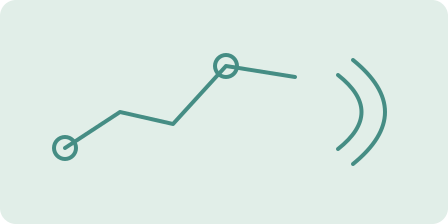

Vibrotactile Navigation Assistance
Developing a wearable haptic navigation system for blind users, combining stereo camera perception with vibrotactile guidance and obstacle warnings. Designed and evaluated haptic patterns in experiments with 18 participants.
Supervisor: Prof. Çağatay Başdoğan
Laboratory: Robotics and Mechatronics Laboratory, Koç University